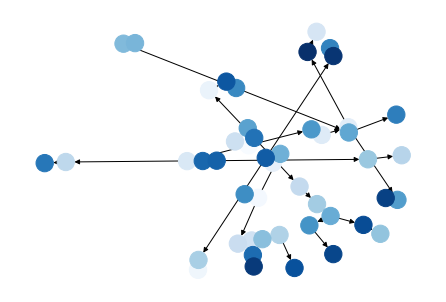
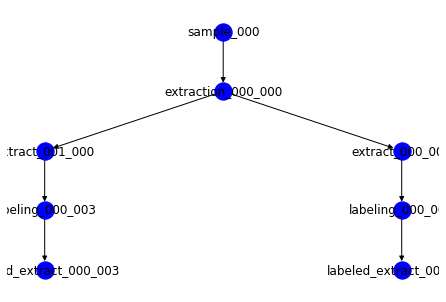
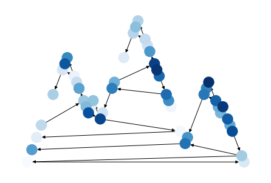
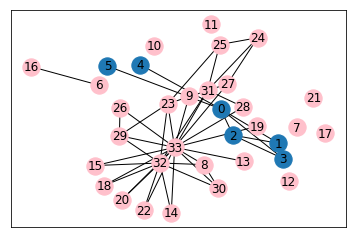

ISA Create - Sample Assay Plan as a Graph: Mass Spectrometry¶
Here I am showing how from a JSON-like dictionary describing an MS experiment you can create a full SampleAssayPlan as a graph and visualize how this looks like
from isatools.model import *
from isatools.create.models import *
import networkx as nx
import plotly.plotly as py
import plotly.graph_objs as go
import matplotlib.pyplot as plt
import pydot
from graphviz import Digraph
import pygraphviz
%matplotlib inline
# from: https://stackoverflow.com/questions/29586520/can-one-get-hierarchical-graphs-from-networkx-with-python-3/29597209
def hierarchy_pos(G, root=None, width=1., vert_gap = 0.2, vert_loc = 0, xcenter = 0.5):
'''
From Joel's answer at https://stackoverflow.com/a/29597209/2966723.
Licensed under Creative Commons Attribution-Share Alike
If the graph is a tree this will return the positions to plot this in a
hierarchical layout.
G: the graph (must be a tree)
root: the root node of current branch
- if the tree is directed and this is not given,
the root will be found and used
- if the tree is directed and this is given, then
the positions will be just for the descendants of this node.
- if the tree is undirected and not given,
then a random choice will be used.
width: horizontal space allocated for this branch - avoids overlap with other branches
vert_gap: gap between levels of hierarchy
vert_loc: vertical location of root
xcenter: horizontal location of root
'''
# NOTE: This was commented out for testing with ISA-API output (a DiGraph)
# if not nx.is_tree(G):
# raise TypeError('cannot use hierarchy_pos on a graph that is not a tree')
if root is None:
if isinstance(G, nx.DiGraph):
root = next(iter(nx.topological_sort(G))) #allows back compatibility with nx version 1.11
else:
root = random.choice(list(G.nodes))
def _hierarchy_pos(G, root, width=1., vert_gap = 0.2, vert_loc = 0, xcenter = 0.5, pos = None, parent = None):
'''
see hierarchy_pos docstring for most arguments
pos: a dict saying where all nodes go if they have been assigned
parent: parent of this branch. - only affects it if non-directed
'''
if pos is None:
pos = {root:(xcenter,vert_loc)}
else:
pos[root] = (xcenter, vert_loc)
children = list(G.neighbors(root))
if not isinstance(G, nx.DiGraph) and parent is not None:
children.remove(parent)
if len(children)!=0:
dx = width/len(children)
nextx = xcenter - width/2 - dx/2
for child in children:
nextx += dx
pos = _hierarchy_pos(G,child, width = dx, vert_gap = vert_gap,
vert_loc = vert_loc-vert_gap, xcenter=nextx,
pos=pos, parent = root)
return pos
return _hierarchy_pos(G, root, width, vert_gap, vert_loc, xcenter)
Here we define the structure of our sampling and assay plan, using a Python dictionary. From it we create a full isatools.create.models.SampleAssayPlan object
ms_assay_dict = OrderedDict([
('sample', [
{
'node_type': SAMPLE,
'characteristics_category': 'organism part',
'characteristics_value': 'liver',
'size': 1,
'technical_replicates': None,
'is_input_to_next_protocols': True
},
{
'node_type': SAMPLE,
'characteristics_category': 'organism part',
'characteristics_value': 'blood',
'size': 5,
'technical_replicates': None,
'is_input_to_next_protocols': True
},
{
'node_type': SAMPLE,
'characteristics_category': 'organism part',
'characteristics_value': 'heart',
'size': 1,
'technical_replicates': None,
'is_input_to_next_protocols': True
}
]),
('extraction', {}),
('extract', [
{
'node_type': SAMPLE,
'characteristics_category': 'extract type',
'characteristics_value': 'polar fraction',
'size': 1,
'technical_replicates': None,
'is_input_to_next_protocols': True
},
{
'node_type': SAMPLE,
'characteristics_category': 'extract type',
'characteristics_value': 'lipids',
'size': 1,
'technical_replicates': None,
'is_input_to_next_protocols': True
}
]),
('labeling', {}),
('labeled_extract', [
{
'node_type': SAMPLE,
'characteristics_category': 'labeled extract type',
'characteristics_value': '',
'size': 2,
'technical_replicates': None,
'is_input_to_next_protocols': True
}
]),
('mass_spectrometry', {
'instrument': ['Agilent QTQF §'],
'injection_mode': ['FIA', 'LC'],
'acquisition_mode': ['positive mode']
}),
('raw_spectral_data_file', [
{
'node_type': DATA_FILE,
'size': 1,
'technical_replicates': 2,
'is_input_to_next_protocols': False
}
])
])
ms_assay_plan = SampleAndAssayPlan.from_sample_and_assay_plan_dict(ms_assay_dict)
pv_combination: ()
count: 0, prev_node: sample_000
count: 1, prev_node: sample_001
count: 2, prev_node: sample_002
count: 0, prev_node: extraction_000_000
count: 1, prev_node: extraction_000_001
count: 2, prev_node: extraction_000_002
count: 0, prev_node: extraction_000_000
count: 1, prev_node: extraction_000_001
count: 2, prev_node: extraction_000_002
pv_combination: ()
count: 0, prev_node: extract_000_000
count: 1, prev_node: extract_000_001
count: 2, prev_node: extract_000_002
count: 3, prev_node: extract_001_000
count: 4, prev_node: extract_001_001
count: 5, prev_node: extract_001_002
count: 0, prev_node: labeling_000_000
count: 1, prev_node: labeling_000_001
count: 2, prev_node: labeling_000_002
count: 3, prev_node: labeling_000_003
count: 4, prev_node: labeling_000_004
count: 5, prev_node: labeling_000_005
pv_combination: ('Agilent QTQF §', 'FIA', 'positive mode')
count: 0, prev_node: labeled_extract_000_000
count: 1, prev_node: labeled_extract_000_001
count: 2, prev_node: labeled_extract_000_002
count: 3, prev_node: labeled_extract_000_003
count: 4, prev_node: labeled_extract_000_004
count: 5, prev_node: labeled_extract_000_005
pv_combination: ('Agilent QTQF §', 'LC', 'positive mode')
count: 0, prev_node: labeled_extract_000_000
count: 1, prev_node: labeled_extract_000_001
count: 2, prev_node: labeled_extract_000_002
count: 3, prev_node: labeled_extract_000_003
count: 4, prev_node: labeled_extract_000_004
count: 5, prev_node: labeled_extract_000_005
count: 0, prev_node: mass_spectrometry_000_000
count: 1, prev_node: mass_spectrometry_000_001
count: 2, prev_node: mass_spectrometry_000_002
count: 3, prev_node: mass_spectrometry_000_003
count: 4, prev_node: mass_spectrometry_000_004
count: 5, prev_node: mass_spectrometry_000_005
count: 6, prev_node: mass_spectrometry_001_000
count: 7, prev_node: mass_spectrometry_001_001
count: 8, prev_node: mass_spectrometry_001_002
count: 9, prev_node: mass_spectrometry_001_003
count: 10, prev_node: mass_spectrometry_001_004
count: 11, prev_node: mass_spectrometry_001_005
The ms_assay_plan object is a graph. Let’s which are its nodes.
nx_graph = ms_assay_plan.as_networkx_graph()
# set(nx_graph.nodes)
nx_graph.number_of_nodes()
48
Here we print the links or edges of the graph
# set(nx_graph.edges)
nx_graph.number_of_edges()
45
nx_graph.size()
45
We output is as a networkx graph and we visualize it using matplotlib
G=nx_graph
# nx.draw(G)
nx.draw(nx_graph,pos=nx.spring_layout(G),node_color=range(G.number_of_nodes()),cmap=plt.cm.Blues, with_labels=False)

SG1 = G.subgraph(['sample_000','extraction_000_000','extract_000_000','extract_001_000','labeling_000_000','labeling_000_003','labeled_extract_000_000','labeled_extract_000_003'])
# print(list(SG.edges))
pos1 = hierarchy_pos(SG1,'sample_000')
nx.draw(SG1, pos=pos1, with_labels=True,node_color = 'b')
plt.savefig('hierarchy1.png')
# SG2 = G.subgraph(['sample_001','extraction_000_001','extract_000_001','extract_001_001','labeling_000_001','labeling_000_004','labeled_extract_000_001','labeled_extract_000_004'])
# # print(list(SG.edges))
# pos2 = hierarchy_pos(SG2,'sample_001')
# nx.draw(SG2, pos=pos2, with_labels=True,node_color = 'pink')
# plt.savefig('hierarchy2.png')

# Generating a graphviz compatible output
dot = Digraph()
for node in nx_graph.nodes:
dot.node(node)
dot.edges(nx_graph.edges)
filename=dot.filename
# print(dot.source)
dot.graph_attr['rankdir'] = 'LR' # to layout from left to right (horizontal), rather than top to bottom (vertical)
dot.render(filename, view=True)
'Digraph.gv.pdf'
# nx.draw_networkx_edges(nx_graph,pos=nx.spring_layout(nx_graph))
# fig = go.Figure(data=[nx_graph.nodes,nx_graph.edges])
# nx.draw(nx_graph, with_labels=False, font_weight='bold')
nx.drawing.draw_planar(nx_graph,node_color=range(G.number_of_nodes()),cmap=plt.cm.Blues, style='dashed')

nx.nx_agraph.to_agraph(nx_graph).layout()
nx.nx_agraph.to_agraph(nx_graph).write("isa-test.dot")
G=nx.nx_agraph.read_dot("isa-test.dot")
# G = nx.bipartite.gnmk_random_graph(3, 5, 10, seed=123)
# top = nx.bipartite.sets(G)[3]
# pos = nx.bipartite_layout(G, top)
# pos = nx.planar_layout(G)
pos=nx.drawing.layout.planar_layout(G, scale=2, center=None, dim=2)
nx.draw(nx_graph,pos=nx.drawing.layout.planar_layout(G, scale=1, center=None, dim=2),node_color=range(G.number_of_nodes()),cmap=plt.cm.Blues)

NG = nx.karate_club_graph()
res = [0,1,2,3,4,5, 'parrot'] #I've added 'parrot', a node that's not in G
#just to demonstrate that G.subgraph is okay
#with nodes not in G.
k = NG.subgraph(res)
pos = nx.spring_layout(NG) #setting the positions with respect to G, not k.
plt.figure()
nx.draw_networkx(k, pos=pos)
othersubgraph = NG.subgraph(range(6,NG.order()))
nx.draw_networkx(othersubgraph, pos=pos, node_color = 'pink')
plt.show()
